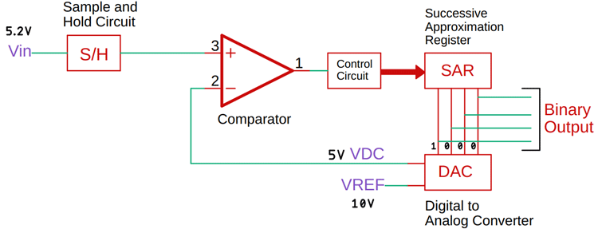
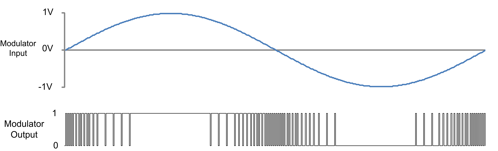

CONVERTER

- 2025 · 01 CONVERTER
Sensör: Sensör, fiziksel bir olayı veya durumu algılayarak bunu elektriksel bir sinyale dönüştüren bir cihazdır. Sensörler, sıcaklık, basınç, ışık, nem, hareket gibi çeşitli fiziksel büyüklükleri ölçmek için kullanılır.MEMS, "Micro-Electro-Mechanical Systems" (Mikro Elektrik Mekanik Sistemler) ifadesinin kısaltmasıdır.
MEMS: Hem mekanik hem de elektrik bileşenlerini içeren, genellikle mikrometre ölçeğinde üretilen sistemlerdir. Gerçek dünyayı örnekleyerek her türlü veriyi alan ve bu fiziksel dünyayı dijitale aktarmayı sağlayan sensör parçalarıdır.
Aktüatör: Aktüatör, bir sistemdeki mekanik hareketi başlatmak veya kontrol etmek için kullanılan bir cihazdır. Genellikle elektrik, hidrolik veya pnömatik enerji kullanarak çalışır. Aktüatörler, belirli bir komut veya sinyal aldıklarında, fiziksel bir hareket veya değişiklik oluştururlar. Örneğin step motor bir aktüatördür.
ADC
ADC: Gerçek dünyadan ölçtüğümüz verileri dijital sistemlere aktarmak için, dijital sistemlerin algılayabileceği ayrık (Discrete) sinyallere dönüştürmemiz gerekir ve bunun için Analog to Digital converter kullanırız. Analog sinyali örnekleyerek dijital sinyale dönüştürür.
Örnekleyici (Sampler): Analog sinyali belirli zaman aralıklarında örnekleyen bir bileşendir. Örnekleme işlemi, sürekli bir analog sinyalin belirli noktalarda alınarak dijital forma dönüştürülmesini sağlar. Farklı çözünürlüklerde örnekleme alınabilmektedir, 10 veya 12 bitlik bir ADC arasındaki fark bir sinyalden alabilecekleri topmlam değer şeklinde ifade edilebilir. 10 bitlik bir ADC, 2^10 (1024) farklı dijital değeri temsil edebilirken, 12 bitlik bir ADC aynı sinyalden 2^12 (4096) farklı dijital değeri temsil edebilir bu durum voltaj hassasiyetini doğrudan etkiler (Yaklaşık 4 kat).
Tutucu (Sample and Hold Circuit): Örnekleme işlemi sırasında alınan analog sinyalin değerini belirli bir süre boyunca sabit tutar. Bu, ADC'nin analog sinyali dijital forma dönüştürmeden önce stabil bir değer elde etmesini sağlar.
Karşılaştırıcı (Comparator): Analog sinyal ile referans voltajını karşılaştıran bir bileşendir. Bu, dijital değerin belirlenmesi için gereklidir. Karşılaştırıcı, sinyalin hangi dijital değere karşılık geldiğini belirler.
Dijital Kayıt (Register): ADC'nin dijital çıktısını saklamak için kullanılır. Her bitin belirlenmesi sırasında güncellenir ve nihai dijital değeri tutar.
Referans Voltajı (Reference Voltage): ADC'nin çalışması için gerekli olan bir referans voltajı sağlar. Bu voltaj, analog sinyalin dijital karşılığını belirlemek için karşılaştırma işlemlerinde kullanılır.
Kontrol Birimi (Control Logic): ADC'nin çalışma sürecini yöneten birimdir. Örnekleme, tutma, karşılaştırma ve dijital çıkışın güncellenmesi gibi işlemleri koordine eder.
Çıkış Arayüzü (Output Interface): Dijital sinyalin dış dünyaya iletilmesini sağlayan bir bileşendir. Bu, genellikle bir veri yolu veya seri iletişim arayüzü şeklinde olabilir.
- Sıralı Yaklaşım (Successive Approximation) ADC: Bu tür ADC'ler, analog sinyali dijital forma dönüştürmek için bir karşılaştırıcı ve bir kayıtçı kullanır. Her bir bit, sırasıyla belirlenir ve bu süreç, analog sinyalin dijital karşılığını bulana kadar devam eder. Avantajları: Hızlı ve orta düzeyde hassasiyet sunar.
- Delta-Sigma (ΔΣ) ADC: Bu ADC türü, yüksek çözünürlük ve hassasiyet sağlamak için oversampling (aşırı örnekleme) ve gürültü şekillendirme tekniklerini kullanır. Genellikle ses ve ölçüm uygulamalarında tercih edilir. Avantajları: Yüksek çözünürlük ve düşük gürültü seviyesi.
DAC
DAC: Dijital sistemlerde işlenen verileri gerçek dünyadaki analog sinyallere dönüştürmek için kullanılır. Dijital sinyalleri alarak, bu sinyalleri sürekli (Continuous) bir analog sinyale dönüştürür. Bu süreç, dijital verilerin belirli bir zaman diliminde örneklenmesi ve ardından bu örneklerin analog bir sinyal olarak yeniden oluşturulması ile gerçekleştirilir. Bu sayede dijital ortamda üretmiş olduğumuz verileri gerçek dünyaya taşıyabilmekteyiz.